Perfection
Starts with Communication
Shop / Commercial Space Dedicated Lighting
Retail Stores:
Spot lighting and ambiance creation for merchandise such as clothing, shoes & bags, jewelry, cosmetics, and electronics — making every item the center of attention.
Commercial Spaces:
Ambient lighting for environments like hotel lobbies, restaurants, cafes, bookstores, exhibition spaces, and beauty salons — creating a comfortable, sophisticated, and immersive experience.
Special Areas:
For safety-sensitive areas such as children’s play zones, kindergartens, fresh food sections in warehouse supermarkets, and indoor advertising lightboxes — we are engineered for absolute safety.
Image
product images
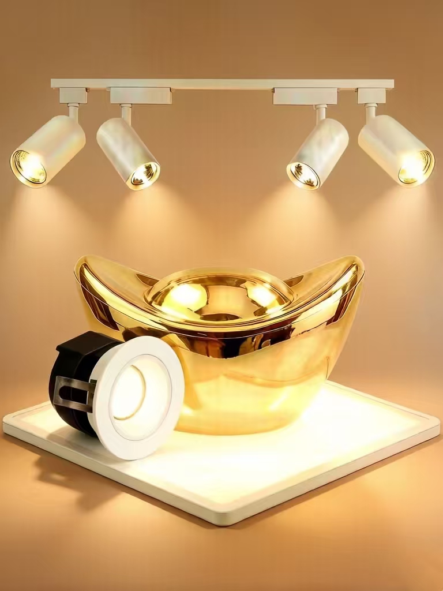
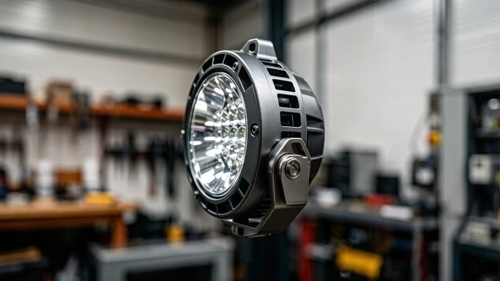
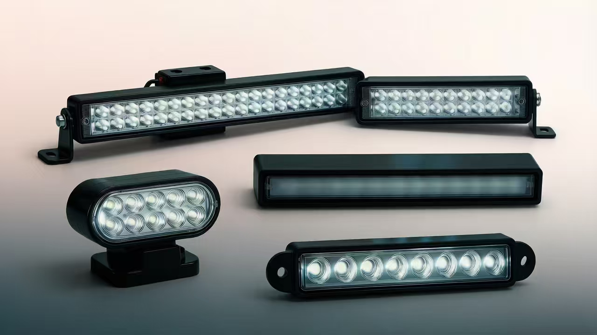
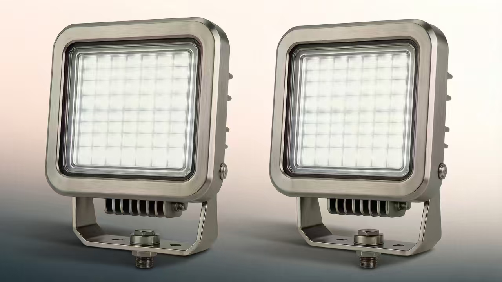
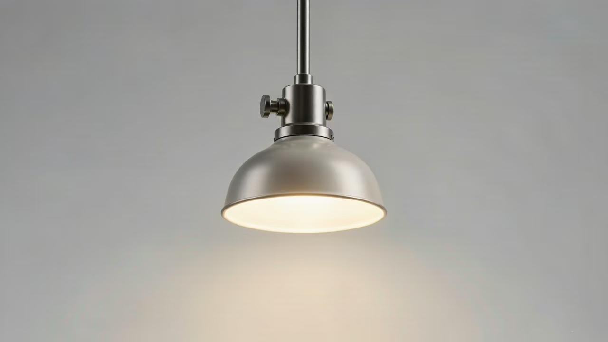
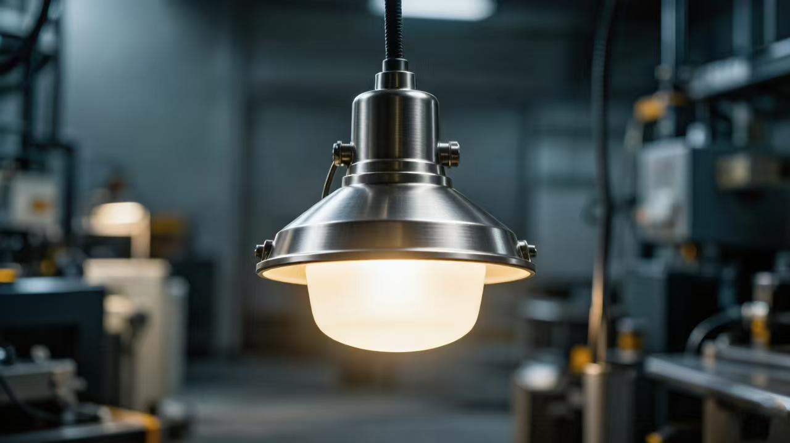
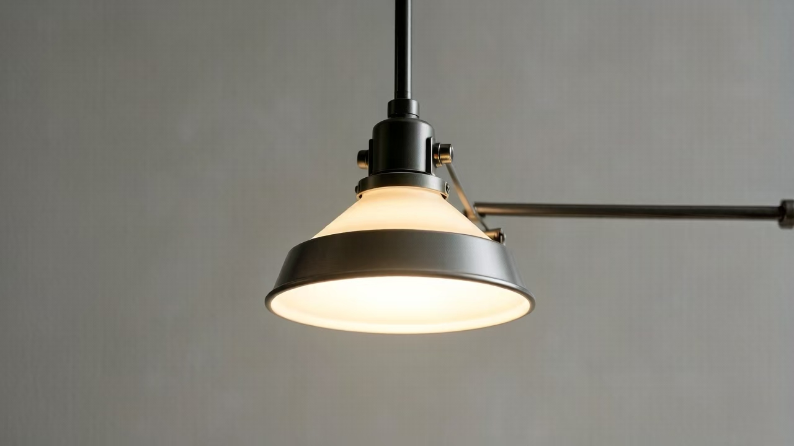
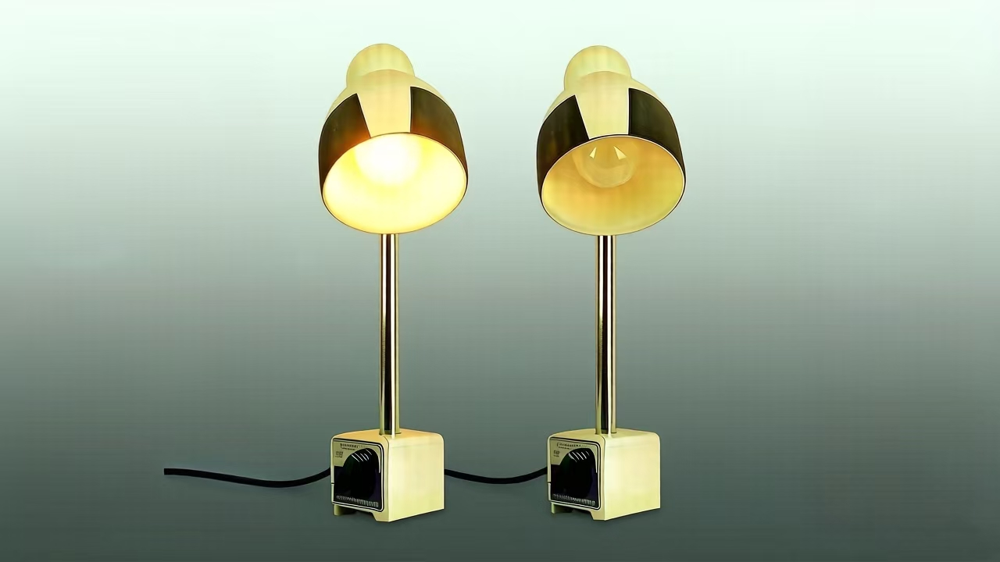
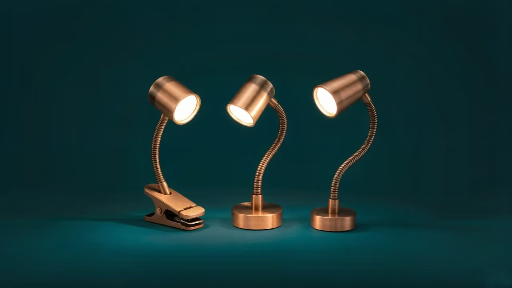
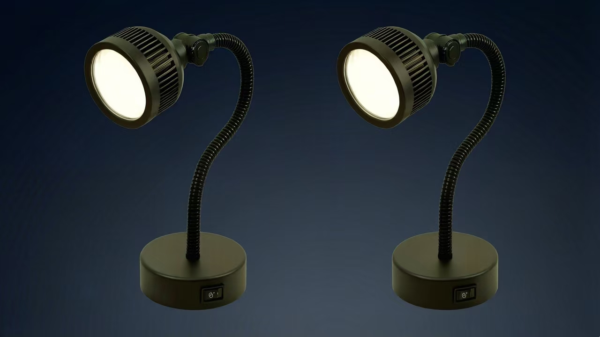
Construction Machinery & Industrial Equipment Lighting
Providing lighting solutions to tackle the three major challenges of nighttime construction, harsh working conditions, and emergency rescue operations,
ensuring the safety, efficiency, and precision of round-the-clock work.
1. Core Operation Scenarios: Illuminating the work area to ensure precise operation.
∎Excavators, Loaders: Providing high-brightness supplemental lighting for the working mechanisms during nighttime earthmoving, mining operations, and
emergency rescue.
∎Cranes: Ensuring clear visibility of the hook area and landing point during nighttime lifting operations.
∎Road Rollers, Pavers: Supporting continuous nighttime construction for roads and airport runways, enabling accurate visual assessment of pavement
smoothness.
∎Mining Dump Trucks: Offering long-distance illumination for nighttime hauling in mining areas, with requirements for vibration and dust resistance.
2. Special Working Condition Scenarios: Ensuring stable and reliable performance in extreme environments.
∎Tunnel Construction: Interior lighting for shield tunneling machines and drilling jumbos, requiring moisture-proof and explosion-proof capabilities.
∎Ports and Terminals: Lighting for nighttime container handling by quay cranes and yard cranes, requiring corrosion resistance against salt spray.
∎Aerial Work Platforms: Providing precisely focused lighting for elevated tasks such as streetlight maintenance and building facade work.
3. Safety Warning and Auxiliary Scenarios
∎Warning Signals: Using rotating beacon lights and strobe lights to outline machinery contours and prevent collisions.
∎Cab/Driver Assistance: Employing instrument panel backlighting and reading lights to ensure clear operator vision inside the cabin.
4. Mobile and Emergency Scenarios
∎Mobile Cranes, Rescue Vehicles: Utilizing onboard work lights for temporary on-site illumination.
∎Emergency Rescue: Deploying rapidly configurable mobile lighting systems for operations like flood fighting and earthquake rescue.
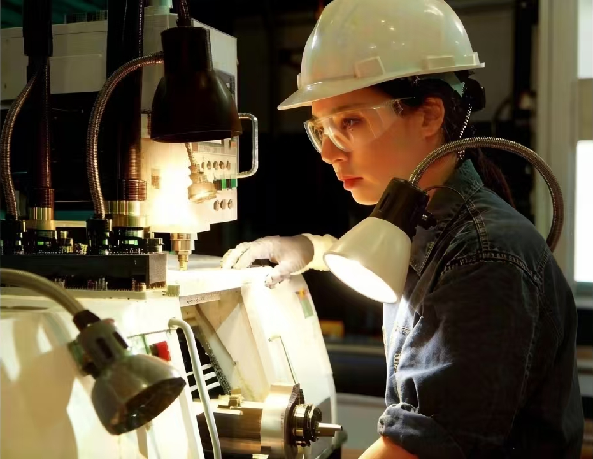
∎Core Task: High-precision operations and visual recognition.
∎Lighting Key Points: Uniform, bright, high color rendering, with no shadows and no glare.
2.Heavy Industry & Power Workshops
∎Core Task: Safe operation in harsh environments.
∎ Lighting Key Points: Explosion-proof, corrosion-resistant, with a high protection level. Capable of
withstanding high temperatures and vibrations.
3.Equipment Inspection and Maintenance Areas
∎Core Task: Localized precision work and fault diagnosis.
∎Lighting Key Points: Portable, flexible, high brightness, suitable for confined spaces.
4.Warehousing, Logistics & Material Handling
∎Core Task: Accurate handling, sorting, and identification.
∎Lighting Key Points: Wide-angle illumination, high uniformity, to reduce handling blind spots.